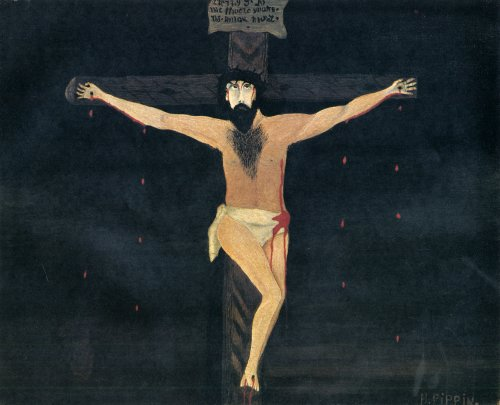

Monday, July the 3rd, 2017
back to: title, date or indexes
I have previously expressed my intolerance of phrases such as “going forward”, “robust and transparent”, and, heaven help us, “diverse ‘n’ vibrant”. Another horror I have thus far overlooked is “nailed”, as in “he's really nailed it there”. For the avoidance of doubt, there is only one thing that can be nailed, and that is Christ to the cross. If you are a barbaric heathen and have no idea what I am talking about, see below.

Crucifixion by Horace Pippin, 1943